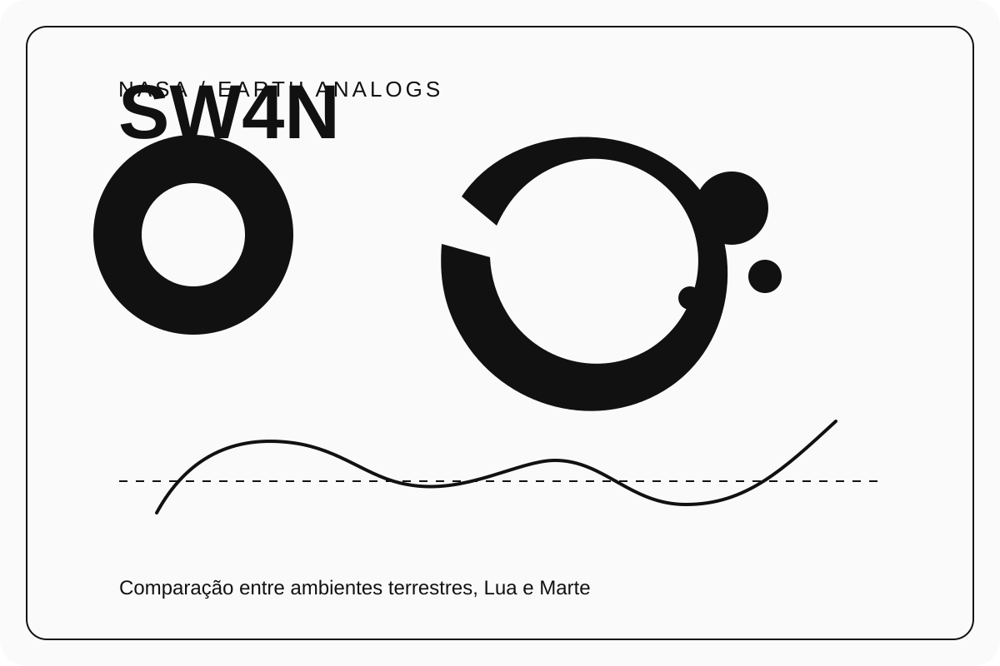
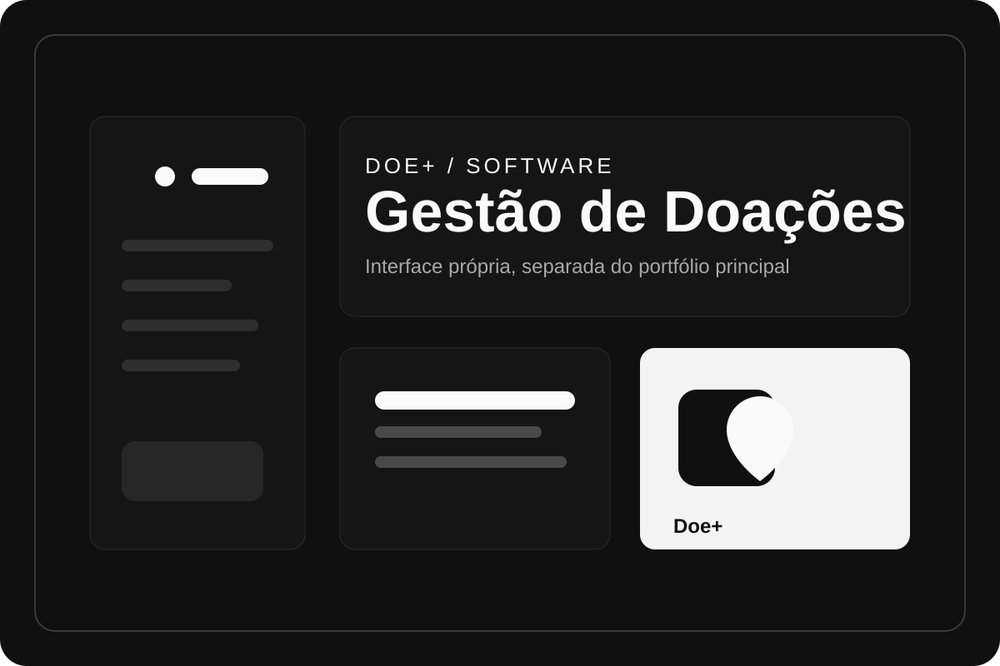

NASA SPACE APPS CHALLENGE · 2026
SW4N — Earth Analogs
Projeto em equipe para comparar ambientes terrestres com regiões da Lua e de Marte, com apoio à pesquisa e exploração espacial.
PORTFÓLIO / DESENVOLVIMENTO DE SOFTWARE
Estudante de Desenvolvimento de Software na FATEC Mauá, com foco em backend, APIs e soluções simples.
SOBRE
Estou construindo minha trajetória em tecnologia com projetos voltados a desenvolvimento de software, integração de dados e backend.
Meu objetivo é reunir trabalhos acadêmicos, pessoais e experiências como o NASA Space Apps em um portfólio claro, profissional e fácil de navegar.
PROJETOS
Menos informação na tela, mais foco no que importa.

NASA SPACE APPS CHALLENGE · 2026
Projeto em equipe para comparar ambientes terrestres com regiões da Lua e de Marte, com apoio à pesquisa e exploração espacial.

PROJETO PESSOAL · JAVA
Sistema demonstrativo para cadastrar, acompanhar e organizar doações. O Doe+ tem uma identidade visual própria, separada do restante do portfólio.
EM BREVE
Essa área foi mantida propositalmente mais limpa para receber seus próximos projetos da FATEC sem deixar a página carregada agora.
CONTATO